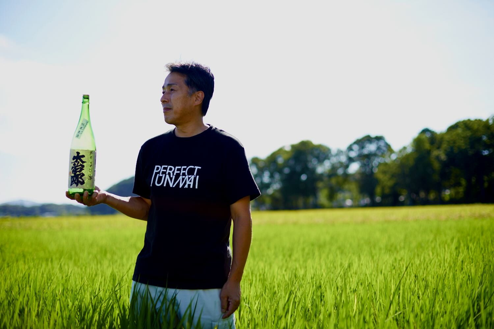
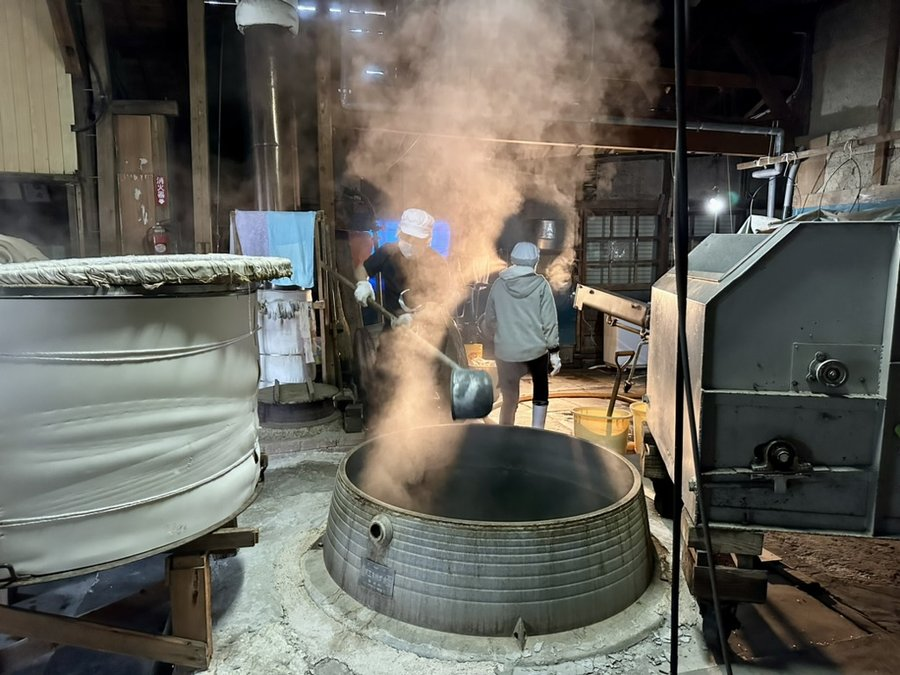
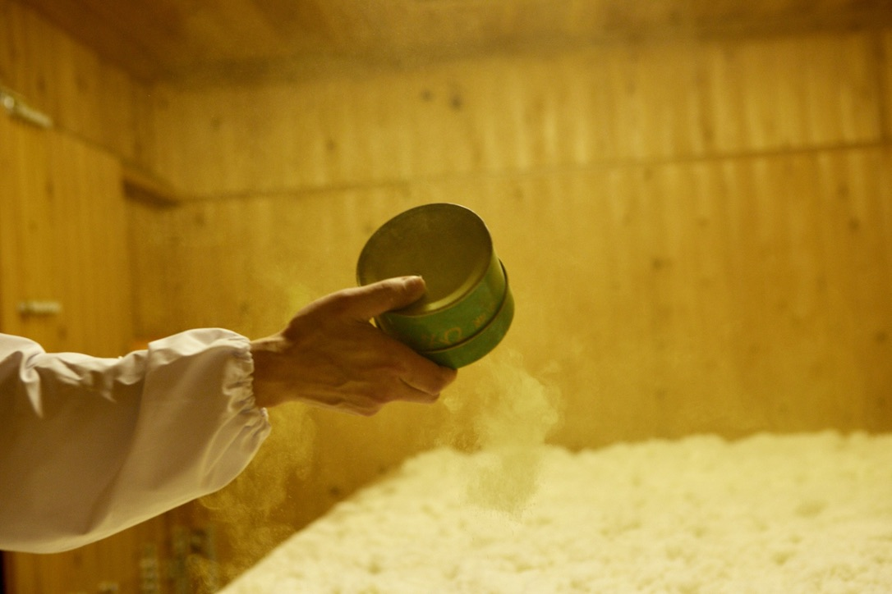
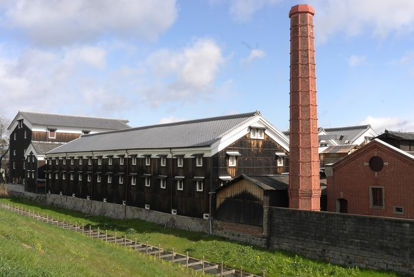
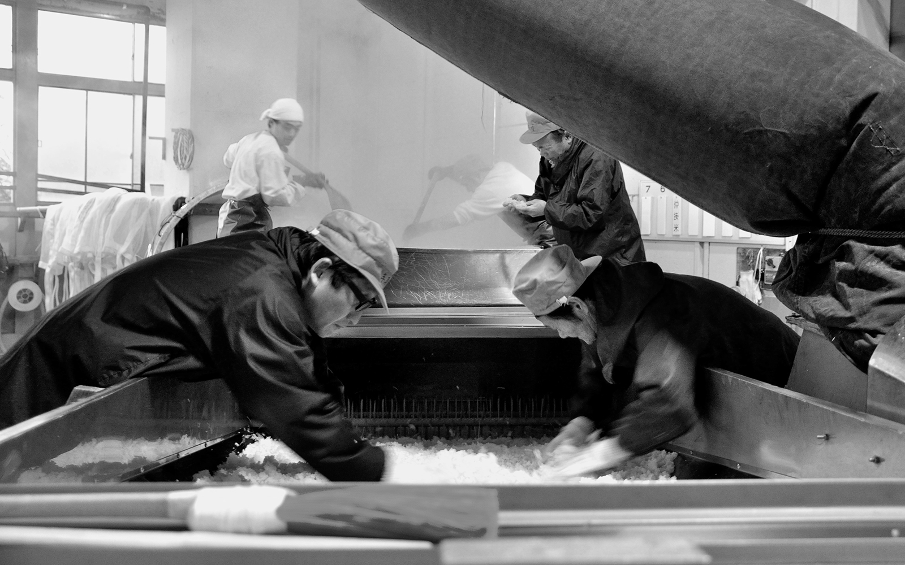

Back
SAKEYŌ
Breweries
Behind the bottle.
Family-run, regional, taking you inside the places where sake is made.

Brewery profiles

Hakugakusen
Yasumoto Sake Brewery
Fukui · Est. 1853
Stunning ginjo sake with "dancing acidity," brewed with water from a mythical spring on Mt. Haku.

Shinrai
Miwa Sake Brewery
Hiroshima · Est. 1716
The ultimate food sake — two water sources, local rice, and a range of styles you don't tire of drinking.

Kinmon
Kinmon Akita Sake Brewery
Akita · Est. 1936
Full-bodied, barrel-finished, umami-forward. On the menus of Michelin-starred restaurants worldwide.

Daijiro
Hata Sake Brewery
Shiga · Est. 1913
Bold, powerful kimoto and yamahai sake. Unfined, undiluted, rooted in the terroir of Shiga.

Natsuta Fuyuzo
Asamai Sake Brewery
Akita · Est. 1917
Limited production ginjo from the Yokote Basin. Fruity, full-bodied, fune-pressed. First time exported.
One rung at a time.